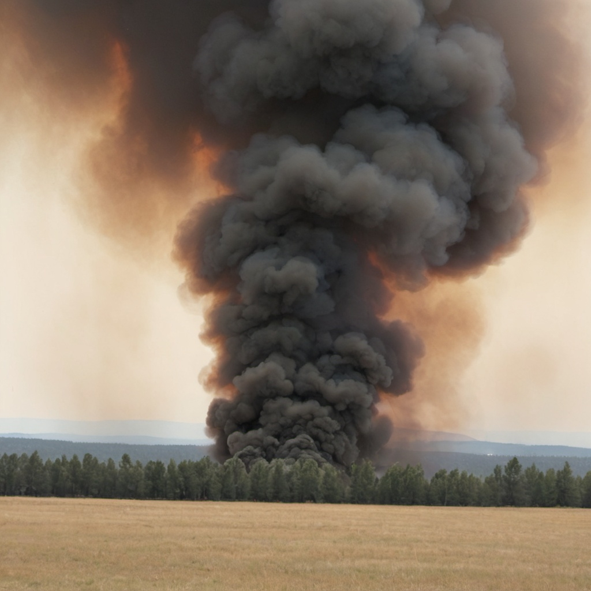

Wie in der Überschrift angedeutet, nehmen wir die Parallelen zwischen der Sintfluterzählung und der der Zerstörung von Sodom und Gomorra unter die Lupe, danach werden andere interessante Aspekte dieser Geschichte analysiert. Zur Erinnerung: In den Zeiten Noahs vor der Flut, herrschte ein Zustand der Gewalt und allgemeiner Bosheit. So extrem war die Situation geworden, dass Gott sich entschloss, fast alle Leben der Erde mit der Sintflut auszulöschen. Am Ende der Geschichte aber, versprach Gott, er werde die Welt nie wieder mit einer Flut zerstören, bemerkte dabei aber: „...das Dichten des menschlichen Herzens ist böse von Jugend auf.” Während die Sintfluterzählung eine von grandiosen Rahmen ist, handelt es sich beim Fall Sodom und Gomorras um einen viel kleineren Maßstab. Wohl bemerkt, dieses mal kommt die Zerstörung durch Feuer und Schwefel, statt durch Wasser, ähnlich ist aber die Darstellung einer außer Kontrolle geratener Bosheit die so extrem geworden ist, dass Gott selbst zu extremer Maßnahme greifen musste. In der Sintfluterzählung waren es die Gewalt und sexuelle Beziehungen zwischen Himmelswesen und Menschen, die die Bosheit der Menschen darstellen sollten, in diesem Fall wird überwiegend ein sexueller Charakter der Taten impliziert.
Das erste Mal, das wir von Sodom und Gomorra erfahren, ist als die Bibel die Grenzen der Länder der Kanaaniter beschreibt: Dieser Bereich reicht bis hin zu, bzw. grenzt an Sodom und Gomorra. Es wird aber nie explizit erklärt, welche Blutlinie in diesen Städten leben, dennoch zählen manche Leute diese Städte zu dem Land Kanaans, und somit zu den Kanaanitern. Außerdem erfahren wir später, dass ein Mann namens Bera der König von Sodom ist, während Birsa der Köngig Gomorras ist. Beide Namen haben auf Hebräisch Anspielungen auf Bosheit. Dementsprechend ist es vermutlich wenig überraschend, als schon bei der zweiten Erwähnung dieser Städte offenbart wird, dass beide Städte künftig zerstört werden.
Zunächst werden Sodom und Gomorra bei Namen genannt, weil Abrams Neffe, Lot, sich ein anderes Grundstück zu bewohnen sucht. Abram und Lot bessassen unter ihnen zu viel Viehbestand, und das Land, wo sie ansässig waren, war für ihre Herden nicht ausreichend. Diese Lage führte zum Streit zwischen den Hirten Abrams und Lots, wobei Lot sich dafür entschied, etwas weiter entfernt von Abram zu ziehen. In Mose 13, Verse 10 bis 13 lesen wir: „Da hob Lot sein Augen auf und besah die ganze Gegend am Jordan. Denn ehe der HErr Sodom und Gomorra verderbte, war sie wasserreich, bis man gen Zoar kommt, als ein Garten des HErrn, gleichwie Ägyptenland. Da erwählte sich Lot die ganze Gegend am Jordan und zog gegen Morgen. Also schied sich ein Bruder von dem anderen, dass Abram wohnte im Lande Kanaan und Lot in den Städten der Jordangegend und setzte seine Hütte gen Sodom. Aber die Leute zu Sodom waren böse und sündigten sehr wider den HErrn.”
Bemerkenswert ist, dass Sodom und Gomorra meistens paarweise erwähnt werden, ansonsten wird lediglich auf Sodom hingewiesen. Trotzdem teilen beide Städte dasselbe Schicksal und dieselbe Bedeutung für spätere Erzählungen der Bibel. Auch interessant ist, wie auf die Zerstörung Sodom und Gomorras in späteren Erzählungen der Bibel hingewiesen wird, oder wie die Bevölkerung der Städte als das Beispiel für ein sündhaftes Volk angewendet wird. Anders ist es mit der Sintflut, denn auf sie wird viel seltener in späteren Erzählungen hingewisen. Meistens wird lediglich das Wort „Flut” in metephorischen Kontexten angewendet, also der Fall von Sodom und Gomorra scheint in der Bibel den größeren Eindruck gemacht zu haben.
Vor der Zerstörung Sodom und Gomorras wird Abraham und Sara (Abram und Sarai) von 3 Männern besucht, die eine Art physischer Manifestation von Gott zu sein scheinen. Abraham und Sara empfangen die Männer als Gäste und bedienen sie, dabei erzählt einer der Männer, dass Sara bis zum nächsten Jahr ein Sohn haben wird, ein Versprechen, das Gott vorher direkt an Abraham gemacht hatte. Sara, die schon alt ist, lacht ungläubig, wobei Gott sie sofort zurecht weist. Später begleitet Abraham die Männer als sie gen Sodom laufen. Hier erklärt Gott, dass er schreckliches über Sodom und Gomorra gehört habe. Jetzt will er selbst sehen, wie die Lage dort ist. Die 3 Männer laufen weiter Richtung Sodom, aber Abraham will von Gott wissen, was die kleinste Zahl von Unschuldigen wäre, wofür Gott Sodom und Gomorra verschonen würde. Schließlich kommen sie auf die Zahl 20. Danach wird Lot von 2 Männern, Engeln, besucht. Er empfängt und bedient die Engel, bevor sich eine Menschenmenge – jung und alt, das ganze Volk aus allen Teilen der Stadt – vor seinem Haus versammelt und fordert, dass er die Männer herausbringt, damit sie die Männer „erkennen” dürfen. Die Engel verblenden die Männer vorübergehend und warnen Lot, dass sie die Städte zerstören werden, und Lot jegliche Familienmitglieder von Sodom und Gomorra wegbringen müsse.
Nachdem Lot und seine Familie den Ort verlassen und sich in Sicherheit bringen, wird uns die Zerstörung in Mose 19, Verse 24 - 26 geschildert: „Da ließ der HErr Schwefel und Feuer regnen – von dem HErrn vom Himmel herab – auf Sodom und Gomorra und kehrte die Städte um und die ganze Gegend und alle Einwohner der Städte und was auf dem Lande gewachsen war.” Später in Versen 27 - 28: „Abraham aber machte sich des Morgens früh auf an den Ort, da er gestanden vor dem HErrn, und wandte sein Angesicht gegen Sodom und Gomorra und alles Land der Gegend und schaute; und siehe, da ging ein Rauch auf vom Lande wie ein Rauch vom Ofen.”
Fazit: Die Unterschiede zwischen der Sintfluterzählung und der von Sodom und Gomorra sind subtil, aber es gibt einige Nennenswerte. Zum einen, befragte Abraham Gott, für wie viele Unschuldige Gott die Städte verschonen würde. Er fragte Gott ziemlich gewagt: „Willst du denn den Gerechten mit dem Gottlosen umbringen? Es mögen vielleicht 50 Gerechte in der Stadt sein; wolltest du die umbringen und dem Ort nicht vergeben um 50 Gerechter willen, die darin wären?” Er wiederholt seine Befragung sogar und nennt die Zahlen 45, 40, 30 und schließlich 20. Dieser Teil der Erzählung wäre vielleicht als Antwort auf die Sintfluterzählung verfasst, in der alle Menschen, außer Noah und seine Familie, umkammen. Vielleicht blieb nach der Sintfluterzählung die Frage für manche Menschen offen, ob es doch nicht mehr Unschuldige auf der Erde gegeben hätte. Nun wird wieder betonnt und bekräftigt, dass Got Unschuldige doch in Betracht zieht. Aber im Gegensatz zu der Sintfluterzählung, zeigt Gott dieses Mal keine Reue. Uns soll klar sein, dass dieser Akt doch nötig und völlig gerecht war. Und schließlich war das Böse in der Sintfluterzählung eher im Allgemeinen beschrieben. Dieses Mal bekamen wir das Erlebnis hautnah, mit dem Hinweis, dass „jung und alt, das ganze Volk aus allen Teilen der Stadt” ein Teil des Problems waren. Die Geschichte von Sodom und Gomorra findet zwar in kleineren Rahmen statt, sie ist aber konsequent in ihrer Erzählung.